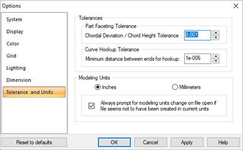

This controls the accuracy of the model and part units.
| Dialog Box: Options > Tolerance and Units |
 Dialog Box: Options > Tolerance and Units |
This controls the accuracy of the models. Smaller tolerance numbers often result in significantly big files and slower processing time but are more accurate. The tolerances are set in a dialog.
|
This converts units from inches to millimeters or from millimeters to inches. If there are existing objects, a dialog will appear confirming if you really want to convert the units. The objects remain the original size but the coordinate values change. You can check the box to always prompt you to change the units when files are opened if they appear not to be in the correct units. For example, if the system sees a coordinate value that is quite large such as 500.5, then this dialog will display giving you the opportunity to change the units to Millimeters. |